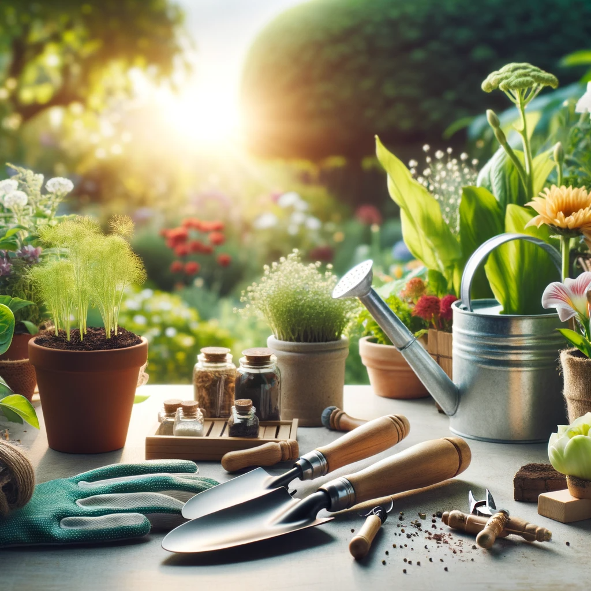

Gardening 101: Cultivating Your Green Thumb
- Understand basic gardening tools and their uses
- Learn fundamental gardening techniques
- Identify common plants suitable for beginners
Welcome to Gardening 101! Today, we'll embark on a journey to understand the basics of gardening, perfect for those just starting out. Gardening is not only a relaxing hobby but also a way to connect with nature. Let's dig in!
Essential Gardening Tools: The first step in gardening is to equip yourself with the right tools. A shovel is indispensable for digging soil, whether you are planting seeds or transplanting flowers. While tools like pruning shears and rakes are important, the shovel is your go-to tool for digging. Remember, a good shovel can make or break your gardening experience.
Watering Your Plants: Knowing when to water your plants is crucial. The best time to water plants is in the morning. This allows the water to reach the roots before the heat of the day and reduces evaporation. Evening watering is also acceptable, but avoid midday watering when the sun is at its peak, as it can harm the plants.
Choosing the Right Plant: If you're new to gardening, start with something hardy and easy to care for. A sunflower is an excellent choice for beginners. Unlike delicate plants like orchids or specialized ones like Venus Flytraps, sunflowers are robust and grow quickly, offering a rewarding experience for first-time gardeners.
Plant Growth Essentials: Plants need several things to thrive, but one of the most important is sunlight. Sunlight helps plants perform photosynthesis, the process of turning light into energy. While music and sugar might be pleasant, they don't aid in plant growth like sunlight does.
Gardening in Small Spaces: Not everyone has a large garden, but that doesn't mean you can't grow plants. Vertical gardening and hydroponics are two techniques ideal for small spaces. Vertical gardening uses walls and trellises to grow plants upwards, while hydroponics allows for plant growth in water, eliminating the need for large soil spaces. Both are great options for urban gardeners.
-
Which tool is essential for digging soil?
a) Shovel
b) Pruning Shears
c) Rake -
What is the best time to water plants?
a) Midday
b) Morning
c) Evening -
Which is a good plant for beginners?
a) Orchid
b) Sunflower
c) Venus Flytrap -
What is essential for plant growth?
a) Music
b) Sunlight
c) Sugar -
Which technique helps in growing plants in limited space?
a) Pruning
b) Vertical gardening
c) Hydroponics